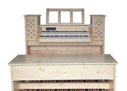
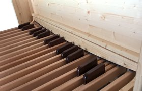
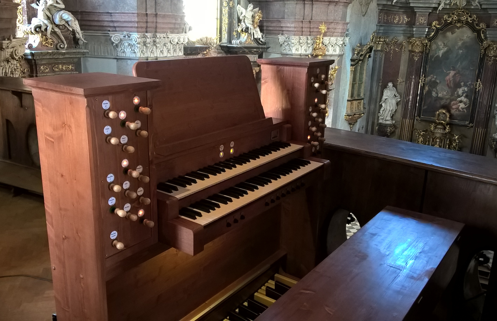

Vyrábíme kompletní digitální varhany i jednotlivé součásti pro stavbu MIDI hracích stolů. Lze navrhnout konstrukci varhan modulárně, kdy jednotlivé části jsou rozebiratelné, což umožňuje celý hrací stůl jednoduše rozložit a bez problémů přemístit. Zároveň je možné přizpůsobit výbavu každého nástroje podle individuálních požadavků. Nástroje vyrábíme zakázkově a není problém vyhovět speciálním požadavkům na výtvarné, materiálové řešení a technické řešení.
Ke tvorbě zvuku využíváme výhradně technologii tzv. samplování. V praxi to funguje tak, že se nahrají zvukové vzorky (tzv. samply dlouhé několik sekund) všech píšťal určitých reálných píšťalových varhan. Tyto samply jsou potom pomocí specializovaného softwaru v reálném čase přehrávány podle přicházejících MIDI signálů z hracího stolu. Díky tomu, že jsou přehrávány nahrané zvuky jednotlivých píšťal reálných varhan, je výsledný zvuk velice věrný. To je hlavní rozdíl oproti běžným digitálním varhanám prakticky všech světových značek bez ohledu na cenu.
Dodáváme prvky pro stavbu MIDI varhanních konzolí. V dnešní době jde o oblíbený a dostupný způsob zajištění cvičení na varhany v domácích podmínkách. Hrací stůl je pomocí MIDI připojen k PC. Zvuk je generován pomocí speciálního programu (Hauptwerk, GrandOrgue, atd). Za rozumnou cenu je zajištěna špičkový zvuková kvalita.
Kompaktní elektronické varhany
Vyrábíme zakázkové typy kompaktních digitálních varhan. Jsou ideální pro stabilní instalace, například kostely, modlitebny, koncertní a obřadní síně. Zde je kromě kvalitního zvuku vyžadována jednoduchost obsluhy a vysoká spolehlivost v nejrůznějších klimatických podmínkách. Z těchto důvodů není vhodné použití osobního počítače s programy typu Hauptwerk, GrandOrgue... Nástroje vybavujeme naším zvukovým systémem Cecilia, který tyto požadavky splňuje.
Popis základní varianty modelu Sebastian
  

{kind=link}
{kind=link}
{kind=link}
{kind=link}
Pedálnice
Naše pedálnice jsou vyráběny podle německé varhanářské normy BDO. Pedálnice jsou paralelní konkávní s rozsahem C-f1 (30 tónů). Konstrukce je navržena tak, aby byly maximálně potlačeny rušivé zvuky při hře (nárazy, klepání) i stranové vůle.
Standardně dodáváme pedálnice s rámem ze smrkového dřeva a bukovými klávesami - povrchová úprava dle požadavků. Spínání jednotlivých tónů je řešeno magnetickými kontakty, u kterých je zajištěna dlouhá životnost a spolehlivost. Kromě zapojení do celku hracího stolu je možné pro cvičení použít pedálnici samostatně v kombinaci například s levnými elektronickými keyboardy, či ve spojení s naším varhanním modulem CECILIA. Pedálnici lze objednat ve variantě s pevným rámem, či zcela rozebiratelnou (výhodné pro zasílání na větší vzdálenost).
{kind=link}
{kind=link}
Manuály
Pro manuálové bloky používáme kvalitní a celosvětově rozšířené klávesnice značky FATAR. V základní verzi jde o pětioktávové manuály s vyváženými plastovými klávesami se simulací tzv. druckpunktu. Manuálů sestavených do bloku může být teoreticky libovolný počet, typické jsou manuály dva. Manuálový blok může být vybaven i tlačítky volných kombinací. Součástí bloku je osvětlení pedálnice průzorem ve stole a notový pult. Na zvláštní požadavek lze zhotovit pultík například klasický celodřevěný rámový, případně doplněný o osvětlení not.
{kind=link}
{kind=link}
Stůl
Stůl je navrhován podle německé varhanářské normy BDO s ohledem na optimální ergonomii a snadný fyzický přístup k varhanám. V plné výbavě je stůl osazen kovovými nožními pistony pro přepínání volných kombinací a pedály pro ovládání crescenda a žaluzie. Osvětlení pedálnice je umístěno v manuálové sestavě, ve stole je pouze průzor.
Pedálnice se zasouvá do prostoru pod trnoží stolu, manuálový blok a registrační skříňky jsou ukotveny ke stolu zámky. Jednotlivé součásti varhan jsou propojeny pomocí konektorů skrytých v konstrukci stolu.
{kind=link}
Volby rejstříků
Volby rejstříků mohou být provedeny jako samostatné skříňky umístěné na obou stranách manuálové sestavy. Preferujeme konzervativní řešení, kdy pro registraci slouží klasická vytahovací rejstříková táhla.
Osazujeme vlastní robustní registrační táhla s magnetickou aretací krajních poloh. Pro spínače používáme buď magnetické jazýčkové kontakty, či mikrospínače. Na přání lze doplnit diodovou indikaci (při používání volných kombinací) a táhla doplnit vratnou pružinou, aby se chovala jako tlačítka. Individuálně se řeší také provedení popisků.
{kind=link}
{kind=link}